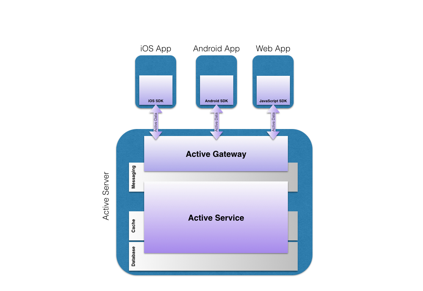
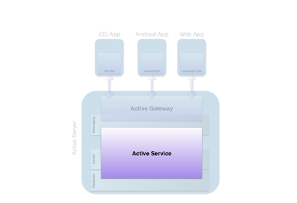
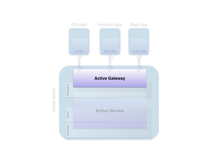
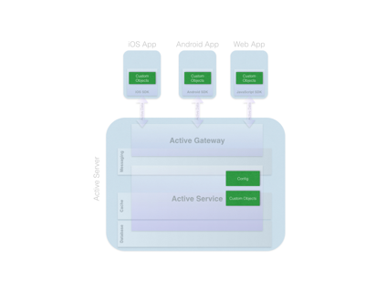
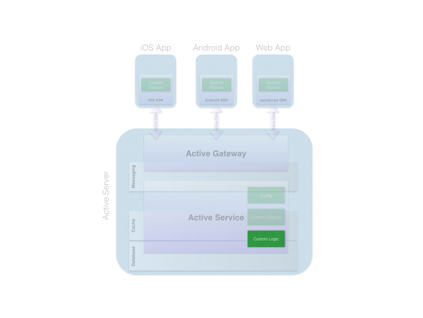
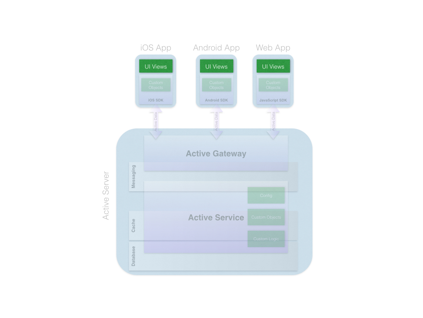
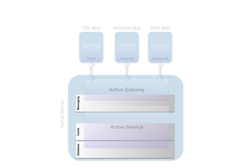
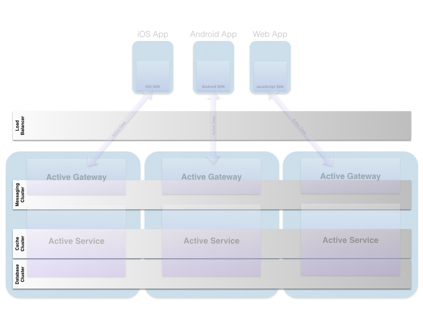
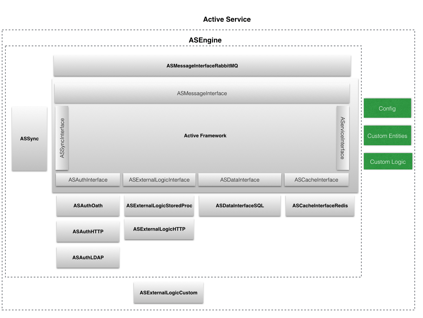

1.
Overview
The ActiveStack Component Architecture is a permissive open source platform
that provides the framework for scalable real time data synchronized apps for
mobile and web solutions. Authentication and data sources are provided out of
the box for new solutions or sourced from one or more existing systems at a
data or API level through configuration.
2.

Active Stack
Components
The Active stack is made up of three types
of components:
·
The Active Service
o
For orchestrating data management and business
logic.
·
The Active Gateway
o
For Client Application Connections
·
The SKDs
o
For Client Development
2.1.

ActiveService
The Active Services combines a custom
Configuration, Data Model, and Business Logic with a prebuilt version of the
Active Engine that provides scalable real time data synchronization for modern
web and mobile apps.
Out of the box the Active Service defaults
to use the supplied Messaging, Cache and Database services. Additionally, the
Configuration allows for connections to external resources including:
·
Authentication Systems
o
OAuth
o
HTTP Based
·
External Data Sources
o
Any SQL Based
·
External Logic and Services
o
REST Based
o
Stored Proc
2.2.

Active Gateway
The Active Gateway provides connection
management for applications. Applications connect though the Active Gateway to
use the Active Service. The Active Gateway handles the following:
·
Client Connection Management
·
Client Authentication
·
Client Reconnect Logic
·
Guaranteed Data Delivery
The Active Gateway is generic and
requires no changes or configuration regardless of the data or logic required
by the applications. The connections to clients are maintained via websockets
who's connections can go up or down and when reconnected all missed messages
will be reissued.
2.3.

ActiveStack SDKs
The ActiveStack SDKs provide client side
developers with the ability to authenticate then access data as if it were
local on the device. The developer simply authenticates by calling the
authentication method on the sdk after which, if successful, they receive
a user object. All required data for the application is provided via that user
object based on the way the at the data model is defined. For example the data
model might have a first name off the user object, in that case the developer
might simply reference “currentUser.firstName”. If the user had a list of
notifications then the user might reference “currentUser.notificaitons” and to
get to the notification name they need only reference
“currentUser.notification.name”. Only the data referenced by the developer is
pulled down. Only on copy of the object is cached in memory. If that data is
updated by another user or system the Active Server will push that data update
to to client to update the client's cached object.
Using a MVVM patterns for view development
means that as objects receive their updates from the server the screen will
update on screen without page based refreshing, pull to refresh, or polling
methods. This allows for a responsive modern app feel with 1/5th the
amount of code and allows developers to focus on how the application can serve
the user instead of how the backend communication works.
3.
Three Steps to Use ActiveStack
There are three basic steps to use the
ActiveStack:
·
Custom Objects and Configuration
·
Custom Logic
·
Client View Development
3.1.
Custom Objects and
Configuration

The first step to setting up the
ActiveStack is to provide the data objects based on a data model. Data objects
are built based on a provided template so that the ActiveService, ActiveGatway
and Client SDKs know how to use them.
The default Config is setup and runs on a
standard ActiveServer and will function out of the box. The default Database
will be automatically setup and configured based on the Custom Objects
provided. However, if you'd like the your Custom Objects to be stored in
external Database or would like to use an existing Database instead of creating
a new one you can use the configuration file to define where the data for the
custom object should be sourced.
When providing the Data Objects the
developer can also provide rules for role based user access so that if the User
requesting the objects don't have rights to add, update, or remove a specific
type of object the ActiveService reject the request.
Also, the Config provides ways to reference
external Authentication and Services.
3.2.
Custom Logic

Any Custom Logic outside the need to simply
create, edit, or save objects can be supplied by writing the logic and
providing it to the ActiveService where it will be available to apps. When
developing the custom logic there no need to worry about what clients need to
be updated, the developer simply provides the rules about what data changes. If
the data that is changed by the Custom Logic effect data that's been referenced
by the Apps then the ActiveService takes care of updating that date in
real-time.
3.3.
UI Views

Lastly, the UI Views can be created. As
discussed above the client side development focus solely on the things that
matter to the app user, what the user sees and how the user interacts to get
their job done. The client developer doesn't worry about anything else.
4.
Supporting Systems
The ActiveStack is designed to be supported by best of breed solutions for
Messaging, Cacheing, and Data Persistence. The Config discussed above and the
ActiveFramework discussed below, both used to built the Active Service, provide
ways to switch out or supplement these supporting system depending on your
needs.
4.1.
Docker with Supporting Systems
However, there's a Docker container setup that provides a fully configured
version of the stack that includes:
·
ActiveGateway - For Client Connection Management
·
RabbitMQ - For Messaging
·
Redis - For Cacheing
·

MySQL - For Data Persistence
Developers simply add their configured
ActiveService with their custom object to the pre-configured ActiveServer
Docker to have a complete system.
4.2.
Scaling and Fault Tolerance
The ActiveStack is designed to be scalible and fault tolerant. The
ActiveGateway and ActiveService are stateless so that you can run as many as
you like on any number of servers in various configurations across multiple
physical devices.

Included in the many options is the Striped
Configuration that tends to be popular because it is both fault tolerant and
scalable. It requires a minimum of three servers plus a load balancer.
The Messaging, Cache, and Databases are configured as clusters spanning
the three servers and each server has a ActiveGateway processes and
ActiveService processes. Additional servers can be added based on capacity
needs and any one server can go down and the overall system continues to
perform.
This is not the only options and depending
on the solution profile other options such as having one more components on
their own servers might be applicable.
5.
ActiveService Details
The ActiveService layer of the ActiveStack is designed to be highly
configurable by not requiring custom code for typical use cases like connecting
to existing databases and web services. It's also designed to be extensible so
that via the configuration file you can replace or extend additional
functionality by providing custom implementation that connects to the
ActiveFramework and can be used by specifying it's instantiation via the
Config.

5.1.
Active Engine
The ActiveEngine brings together the ActiveFramework described below with the
implementations of the ActiveFramework interfaces that are required for the
framework to function. The ActiveEngine along with a Config, Custom Entities,
and Custom Logic make up the ActiveStack's ActiveService layer.
5.2.
Active Framework
The ActiveFramework provides the structure, interfaces, and coordination
between the different functions that are needed for the system to operate. The
ActiveFamework is the glue that binds the system together. Implementations of
each of the systems functions are broken out and developed as separate
implementations. There are seven different types of interfaces that have to
have implementations to provide the required functionality. One or more versions
of each of the implementations are included and bundled together within an
ActiveEngine version.
5.2.1. ASMessageInterface
o
The ASMessageInterface provides the interface
for a message queue that provides the storage of messages between different
parts of the system.
o
Implementations included as part of
ActiveEngine:
§
ASMessageRabbitMQ
·
ASMessageInterface implementation that provides
the connection to RabbitMQ.
5.2.2. ASAuthInterface
o
The ASAuthInterface provides the interface for
systems that provides user authentication for the system.
o
Implementations included as part of the
ActiveEngine:
§
ASAuthOath implementation
·
ASAuthOath implementation that provides
authentication though web based Oath process.
§
ASAuthHTTP implementation
·
ASAuthHTTP implementation provides
authentication via passing a user name and password to a URL provided by the
config file.
5.2.3. ASCacheInterface
o
The ASCacheInterface provides the interface for
a key value cache and store that provides fast access to in memory temporal storage.
o
Implementation included as part of the
ActiveEngine:
§
ASCacheRedis
·
ASCacheInterface implementation that provides
the the connection to Redis.
5.2.4. ASDataInterface
o
The ASDataInterface provides the interface for a
data provider for storing persistent data. It is configurable via the Config
with settings such as marking entity tables as read-only and associating
entities with entries in an update table to trigger refresh of data within the
ActiveService.
o
Implementation included as part of the
ActiveEngine:
§
ASDataSQL
·
ASDataInterface implementation that provides the
connection to any SQL based data source.
5.2.5. ASSyncInterface
o
The ASSyncInterface provides the interface for
the data synchronization functionality that ensure that ensures that when data
is updated within the system the appropriate instances of the app are notified
and have their local caches updated.
o
Implementation included as part of the
ActiveEngine:
§
ASSync
·
ASSyncInterface implementation that provides the
data synchronization functionality.
5.2.6. ASExternalLogicInterface
o
The ASLogicInterface provides the interface for
connections to services that provide or trigger logic within external systems.
o
Implementations included as part of the
ActiveEngine:
§
ASExternalLogicHTTP
·
ASExternalLogicInterface implementation that
provides a generic connection to HTTP based services. This allows connections
to third party HTTP services without custom programming through definition of
HTTP call and required parameters within the Config.
§
ASExternalLogicStoredProc
·
ASExternalLogicInterface implementation that
provides a generic connection to data sources with stored procedures. This
allows connection to external logic defined as stored procedures within
external databases without custom programming through definition of SQL
statement and required parameters within the Config.
5.2.7. ActiveServiceHooks
o
The ActiveServiceHooks provide a way to connect
to and use the ActiveFramework for a custom version of the ActiveService. There
are three integration points and sets of functionality that are provided by the
hooks:
§
Connection and processing of the Config file.
§
Connection to Custom Entities through base
classes provided by ActiveFramework.
§
Connection to Custom Logic through base classes
provided by ActiveFamework.